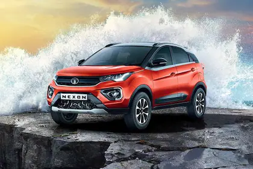

Tata Nexon 
Tata Nexon is a 5 seater SUV available in a price range of Rs. 7.39 - 13.73 Lakh*. It is available in 44 variants, 3 engine options that are BS6 compliant and 2 transmission options: Manual & Automatic. Other key specifications of the Nexon include a kerb weight of, ground clearance of 209 mm and boot space of 350 Liters. The Nexon is available in 5 colours. Over 781 User reviews basis Mileage, Performance, Price and overall experience of users for Tata Nexon.
specifications:Mileage (upto)21.5 kmpl
Engine (upto)1499 cc
BHP118.36
TransmissionManual/Automatic
Seats5
Service CostRs.4,447/yr
Renault Duster
Renault Duster is a 5 seater SUV available in a price range of Rs. 9.86 - 14.25 Lakh*. It is available in 7 variants, 2 engine options that are BS6 compliant and 2 transmission options: Manual & Automatic. Other key specifications of the Duster include a kerb weight of and boot space of 475 Liters. The Duster is available in 7 colours. Over 302 User reviews basis Mileage, Performance, Price and overall experience of users for Renault Duster.
specifications:Mileage (upto)16.42 kmpl Engine (upto)1498 cc
BHP 153.866
Transmission Manual/Automatic
Seats 5
Service Cost Rs.3,858/yr
.webp)
Maruti Ertiga is a 7 seater MUV available in a price range of Rs. 8.12 - 10.85 Lakh*. It is available in 7 variants, a 1462 cc, BS6 and 2 transmission options: Manual & Automatic. Other key specifications of the Ertiga include a kerb weight of 1135-1170 and boot space of 209 Liters. The Ertiga is available in 5 colours. Over 1458 User reviews basis Mileage, Performance, Price and overall experience of users for Maruti Ertiga.
specifications:Mileage (upto)26.08 km/kg
Engine (upto) 1462 cc
BHP 103.26
Transmission Manual
Seats 7
Service Cost Rs.3,949/yr
.webp)
Maruti Vitara Brezza is a 5 seater SUV available in a price range of Rs. 7.69 - 11.34 Lakh*. It is available in 9 variants, a 1462 cc, BS6 and 2 transmission options: Manual & Automatic. Other key specifications of the Vitara Brezza include a kerb weight of 1135-1150 and boot space of 328 Liters. The Vitara Brezza is available in 9 colours. Over 560 User reviews basis Mileage, Performance, Price and overall experience of users for Maruti Vitara Brezza.
specifications:Mileage (upto) 18.76 kmpl
Engine (upto) 1462 cc
BHP 103.26
Transmission Manual/Automatic
Seats 5
Service Cost Rs.6,619/yr
.webp)
Hyundai Creta is a 5 seater SUV available in a price range of Rs. 10.23 - 17.94 Lakh*. It is available in 19 variants, 3 engine options that are BS6 compliant and 2 transmission options: Manual & Automatic. Other key specifications of the Creta include a kerb weight of and boot space of 433 Liters. The Creta is available in 6 colours. Over 1134 User reviews basis Mileage, Performance, Price and overall experience of users for Hyundai Creta.
specifications:Mileage (upto) 21.4 kmpl
Engine (upto) 1497 cc
BHP 138.08
Transmission Manual/Automatic
Seats 5
Service Cost Rs.3,225/yr
Renault Duster
Maruti Suzuki Ertiga
Maruti Suzuki Vitara Brezza
Hyundai Creta